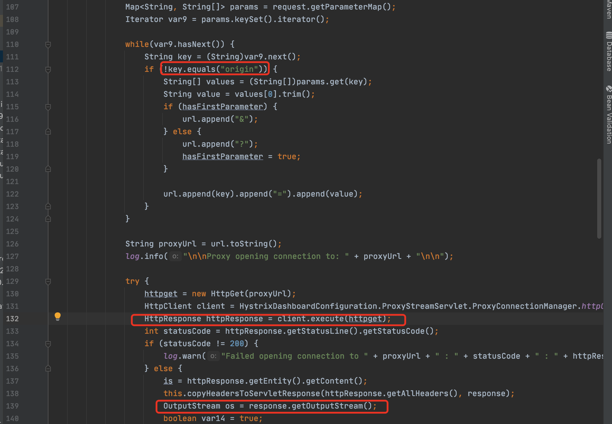
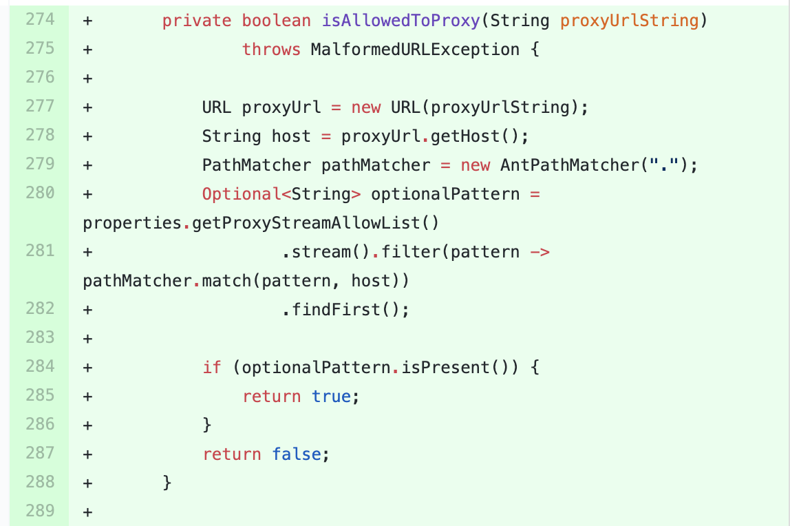

CVE-2020-5412分析复现
Hystrix(断路器)
Hystrix 可以在系统不稳定时及时断开外部请求，防止雪崩，以达到保护系统的整体稳定性。但是由于这些操作都由Hystrix 自动完成，开发人员无法获知到底哪些服务有问题，以及相应请求的成功率、响应时间等信息以备后续分析和改进
环境搭建
1 | https://github.com/mkheck/aou-hystrix-dashboard |
漏洞原理
proxy.stream接口原始功能是为了实时获取服务器聚合后的数据，并将信息实时推送给长连接的response。但是该功能点并未做限制能够造成SSRF
版本影响
Spring Cloud Netflix
1 | 2.2.0 to 2.2.3 |
漏洞分析
访问http://url/proxy.stream接口，由`ProxyStreamServlet`类处理数据.通过传入orign参数能够经`java.net.Socket.connect`连接到恶意URL.

漏洞修复
https://github.com/spring-cloud/spring-cloud-netflix/commit/624bbc8b50f7b5b6a1addc62040e4f2587f24f1b
只允许访问配置文件中的URL
